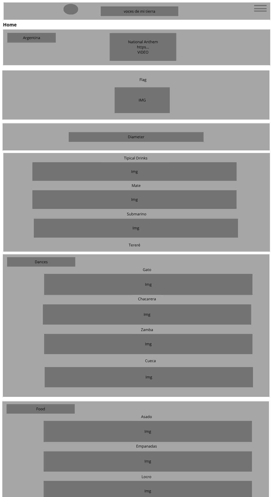
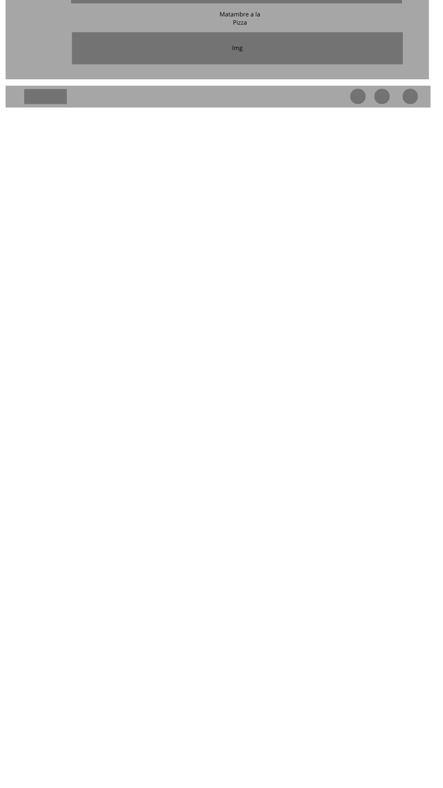
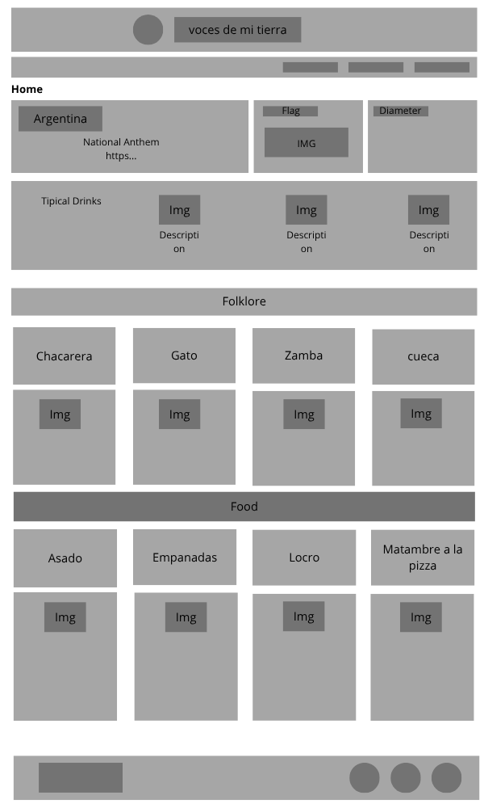

Voces de mi tierra was the name chosen because it reflects the central purpose of the site: to give voice to the culture, traditions and stories of my country. Through this page, I want to share with the world the richness and beauty of my land, highlighting what makes it unique and special.
The purpose of this site is to make known the culture, customs, landscapes and artistic expressions of my country. Through articles, photographs, interviews and stories, Voces de mi Tierra seeks to create a space where people can value their own culture, strengthen their cultural identity and awaken the interest of both locals and foreigners to discover and appreciate the richness of this land.
Colores seleccionados y sus usos:
Mobile View:
 Desktop View:
